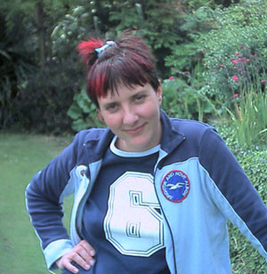

Heidi's Page
Updated 11/07/2002
|  |
Heidi spends her daytimes looking after Indigo and Asher, encouraging them both to grow up.
Below is a summary of her current thinking: |
Summer
Hooray for the baby rabbits being born! And
the Grape Hyacinths!
Clothes
Music
Here's a list of people and musical-things I like, and my fave songs by them:
Books
This week I am reaing Magaret
Attwood's The Blind Assassin. It is a very big book - I don't
know when I'll finish it.
Friends
I love wild flowers which most people seem to know as weeds.
They should be left to grow, rather than be mown to shreds every week. My favourites are
daisies and montbretia.
I also love obscure Japanese tat, especially
cartoons and fashion. The more
bracelets I have, the happier I am (and the more I want). I also keep getting my
hair dyed, and soon
there won't be more colours to choose.
Films
I have no time for TV. Best. But when I was able to watch it I liked
Father Ted, Big Train
and The Office. I would say I liked
Gardening Programmes, but they're all too design and not enough
plants.
Back to the main page.